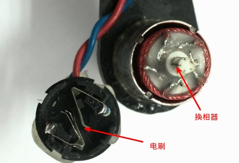

電動機有有刷和無刷之分。結構上，無刷電機和有刷電機有相似之處，也有轉子和定子，只不過和有刷電機的結構相反；有刷電機的轉子是線圈繞組，和動力輸出軸相連，定子是永磁磁鋼；無刷電機的轉子是永磁磁鋼，連同外殼一起和輸出軸相連，定子是繞組線圈，去掉了有刷電機用來交替變換電磁場的換向電刷，故稱之為無刷電機（Brushless motor）。
有刷電動機是內部含有換相電刷的電動機。什麼是電刷呢，直接上圖。電刷通過絕緣座固定在電動機後蓋上，將電源的正負極引入到轉子的換相器上，而換相器連通了轉子上的線圈，線圈極性不斷的交替變換與外殼上固定的磁鐵形成作用力而轉動起來。下圖是將現在Crazepony使用的電機拆解之後看到的電刷和換相器。

有刷電機由於電刷和換相器之間的物理接觸，所以有摩擦大，發熱大，效率低等缺點。但是有刷電機同樣具有製造簡單，成本低廉的優點，所以現在市面上有刷電機仍然佔有很大份額。
有刷電機通過電刷和換相器這種結構設計獲得固定方向的磁場作用力而轉動起來。無刷電機沒有電刷和換相器，它是如何獲得固定方向的磁場作用力的呢？簡單而言，依靠改變輸入到無刷電機定子線圈上的電流波交變頻率和波形，在繞組線圈周圍形成一個繞電機幾何軸心旋轉的磁場，這個磁場驅動轉子上的永磁磁鋼轉動，電機就轉起來了。
電機的性能和磁鋼數量、磁鋼磁通強度、電機輸入電壓大小等因素有關，更與無刷電機的控制性能有很大關係，因為輸入的是直流電，電流需要電子調速器將其變成3相交流電，這就是無刷電機配合的電調需要解決的問題。
無刷電機擁有動力足，壽命長，效率高等優勢。所以大四軸都是用無刷電機的，模型無刷電機的外觀如下，區別於有刷電機，最明顯的就是無刷電機有三根線，並且配合電調使用。
無刷電機最重要的一個參數是KV值，這個數值是無刷電機獨有的一個性能參數，是判斷無刷電機性能特點的一個重要數據。
無刷電機KV值定義為轉速/伏特，意思為輸入電壓增加1伏特，無刷電機空轉轉速增加的轉速值（轉/分鐘）。總這個定義來看，我們能知道，無刷電機電壓的輸入與電機空轉轉速是遵循嚴格的線性比例關係的。
例如：某無刷電機KV值為1000KV，意思是此電機在1V電壓下，每分鐘轉速為1000轉。則在10V電壓下，此電機轉速為：10V*1000KV=10000轉/分，當然這些都是在電機空載的時候。
繞線匝數多的，KV值低，最高輸出電流小，但扭力大。
繞線匝數少的，KV值高，最高輸出電流大，但扭力小。
空心杯電機（coreless motor）屬於直流、永磁、伺服微特電機。空心杯電機在結構上突破了傳統電機的轉子結構形式，採用的是無鐵芯轉子。空心杯電機具有十分突出的節能、控制和拖動特性。
空心杯電機分為有刷和無刷兩種，有刷空心杯電機轉子無鐵芯，無刷空心杯電機定子無鐵芯。
Crazepony使用的是有刷空心杯電機，轉速為30000轉/分鐘，直徑為7mm，長度為20mm（簡稱720電機），電機軸直徑為1mm。當然，隨著現在生產工藝的進步，現在市面上已經有體積非常小的航模無刷電機，Crazepony也會嘗試使用無刷電機。
Crazepony空心杯高速電機拆解圖，可以明顯看到線圈中間沒有鐵芯的。
關於無刷直流電機原理的講解。